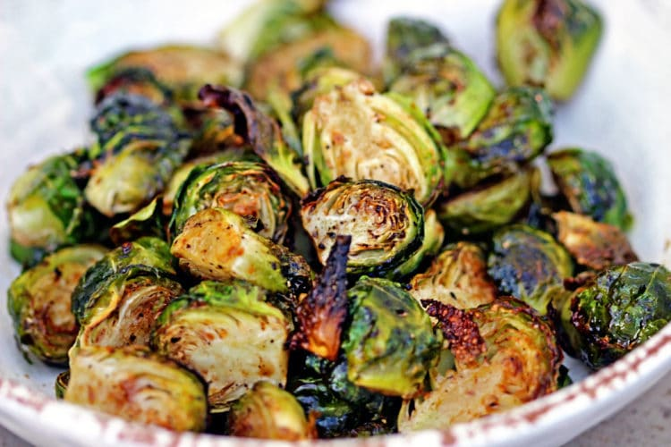

These honey and balsamic brussel sprouts are not only easy to prepare, they're good for you, too!
This crispy and sweet method of cooking sprouts will become your new healthy addiction ;)
Prep Time:
5 mins
Cook Time:
20 mins

Ingredients
1 1/2 lbs fresh brussel sprouts
3 tbsp olive oil
3/4 tsp kosher salt
2 tbsp balsamic vinegar
2 tsp honey
Instructions
Preheat oven to 425°F.
Line a baking sheet with aluminum foil.
Trim off the outer, dry leaves, cut the bottom off and slice sprouts lengthwise.
In a large bowl, toss brussel sprouts with 1 tablespoon balsamic and honey, along with 2 tablespoons of olive oil, kosher salt and freshly cracked black pepper to coat thoroughly.
Transfer the brussel sprouts to lined baking sheet, and roast until tender and caramelized. (About 20 minutes.)
Place brussel sprouts back in bowl. Add remaining tablespoon olive oil, balsamic vinegar and honey and toss to coat evenly. Taste and season with kosher salt if necessary and serve.